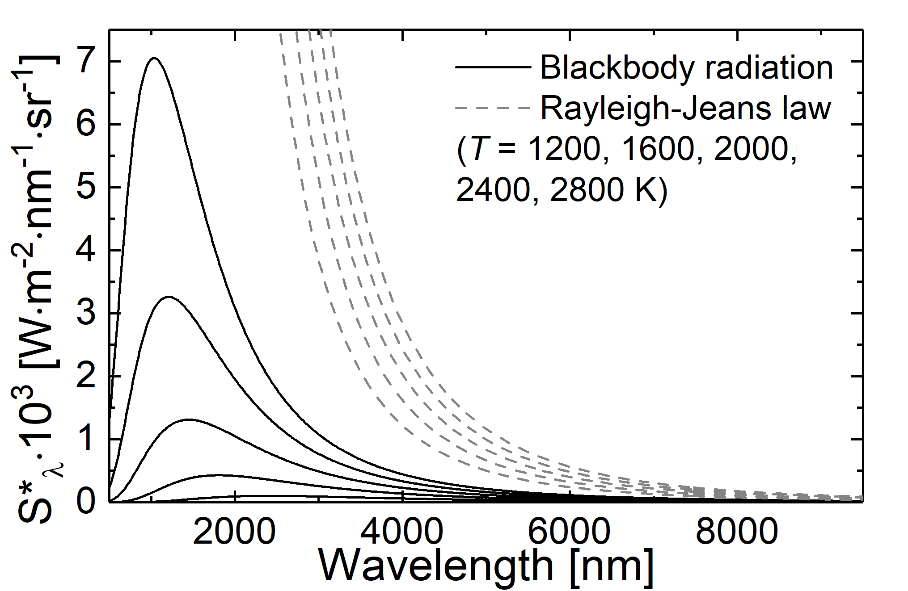
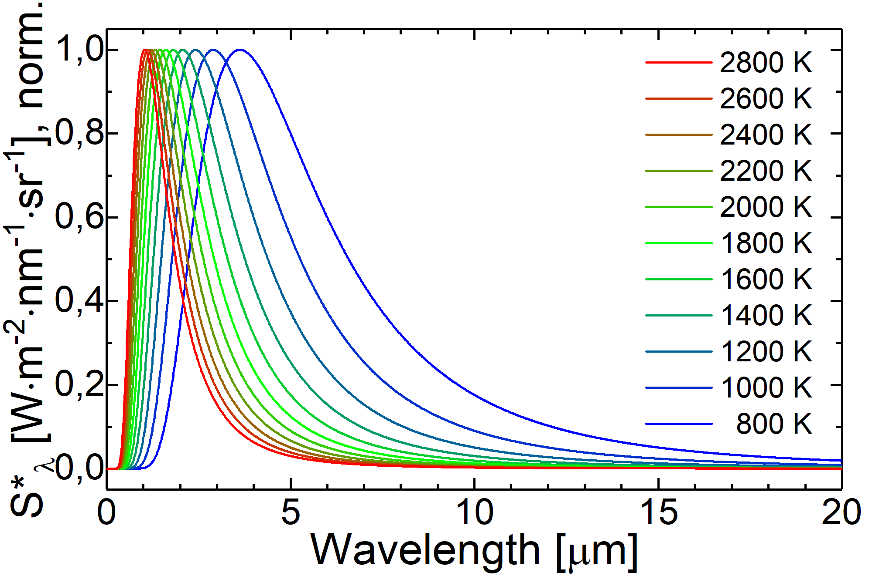
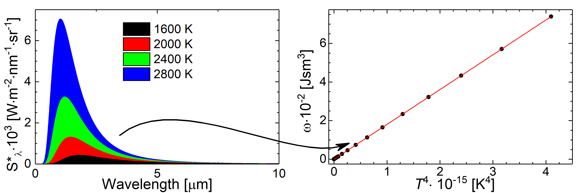

This page was generated from `/home/lectures/exp3/source/notebooks/L21_AMA/Plancks_law.ipynb`_.

The Birth of Quantum Mechanics¶
Stefan-Boltzmann Law¶
In order to derive the expression which we know today as Stefan-Boltztmann law, Stefan discovered the empirical relation in 1879 and later in 1884 Boltzmann derived the law on the basis of thermodynamics and Maxwell relations. First we want to consider the inner energy \(U\) of an isolated system, which can expressed as thermodynamic potential depending on the temperature \(T\), the entropy \(S\), pressure \(p\)n and volume \(V\),
If we now calculate the derivative of the inner energy with respect to the volume at constant temperature
and make use of one Maxwell relation, namely
we get
Previously Maxwell presented an expression for the radiation pressure being \(p = \frac{1}{3}u\) with \(u\) as the energy density and the total inner energy as \(U = u\cdot V\). If we use this expressions in the equtation of the derivative and integrate, we obtain
with \(C_1\) and \(C_2\) denoting integration constants. In the modern form we refer to the radiation power \(P\) as
being proportional to the Stefan-Boltzmann constant \(\sigma\), the blackbody area \(A\), and to the fourth power of the absolute temperature. This law also describes that every body with a temperature higher than \(0 \mbox{ K}\) emits electromagnetic radiation.
Wien’s Displacement Law¶
In 1896 Wien published how the spectrum of cavity radiation changes with altered temperature. Today this law is often not refered to the overall shape of the spectrum, but rather to the maximum of the spectrum. In 1896 the Stefan-Boltztmann law was already published stating that the emitted radiance depends on the apparent temperatrure to the power of 4 (\(\propto T^4\)). However, the actual spectral distribuition of the energy was unknown.
On the basis of thermodynamic concepts and the Stefan-Boltzmann law Wien derived a relation between the wavelength \(\lambda\) and the spectral energy at a particular wavelength \(\varphi \left(\lambda\right)\)
and
The last equation can be reformulated into the shape of
with \(b\) being the proportionality or Wien’s displacement constant (\(b = 2.898 \cdot 10^{-3} \, \mathrm{m}\cdot\mathrm{K}\)).
Wien further examined the integration with the result for the energy profile \(\varphi = \varphi_0 \; \frac{\mathrm{d} \lambda_0}{\mathrm{d} \lambda} = \varphi_0 \; \frac{\mathrm{d} T}{\mathrm{d} T_0}\). In addition with the known relation from the Stefan-Boltzmann law \(\varphi \propto \frac{T^4}{T_0^4}\), Wien proposed the spectral shape at a particular temperature on the basis of the spectral shape at a know temperature \(\varphi = \varphi_0 \frac{T^5}{T_0^5}\). So far the exact spectral shape still remained unknown; however, by means of adjusting the parameter \(\varphi_0\) theory were successfully brought into coincidence with experimental results and the spectrum for small wavelengths could be predicted.
Wien’s distribution law or Wien approximation¶
In his original publication in 1896 Wien employed the wavelength dependence of the blackbody radiation and the Mawell-Boltzmann distribution for the speed of molecules. On the basis thermodynamic arguments he derive a formula for the radiance
with \(C_1\) and \(C_2\) being constants. As to be expected the curve described by this formula exhibts a maximum. In the case of short wavelength, experimental results from cavity radiation can be well described. For long wavelengths, instead, the Wien approximation underestimated the radiance.

Fig.: Comparison between blackbody radiation (solid lines) and Wien approximation (dashed lines) at different temperatures.
Rayleigh–Jeans law¶
In order to calculate the average energy per eigen-oscillation Rayleigh and Jeans used the classical appraoch. Similar to the hamonic oscillators every mode bears the average energy of
with \(k\) and \(T\) being the Boltzmann constant and absolute temperatur, respectively. Therefore, within the limit of the classical approach the spectral energy density,
rises quadratically with respect to the frequency \(\nu\). Tis quadratic relation is know as Rayleigh-Jeans law. As a consequence a small hole in the cavity wall will then emit radiation into the solid angle of \(\mathrm{d} \Omega = 1 \mbox{ sr}\) with the radiance of
If we no consider a temperatur of about \(5000 \; \mathrm{K}\) we achieve a wavelength bigger than \(2 \; \mu\mathrm{m}\), being well in the infrared region. For this spectral region the measured radiance and the theoratical prediction are in agreement. However, if we reduce the wavelength, disparities between experimental findings and the prediction appear. Moreover, if the Rayleigh-Jeans law was valid, there has been the so-called ultraviolet catastrophe! In the case of decreasing frequencies, the spectral energy density and the integrated radiance will rise until they become infinite big for vanashing frequencies.

Fig.: Comparison between blackbody radiation (solid lines) and radiation as decribed through the Rayleigh-Jeans law (dashed lines) at different temperatures.
Planck’s law¶
In 1900 Max Planck faced the question how to omit the ultraviolet catastrophe and to describe the blackbody radiation as a whole.

Fig.: Comparison between blackbody radiation at 3000 K (solid line) and radiation as decribed through the Wien approximation (dashed line) and the Rayleigh-Jeans law (dash-dotteded line).
He proposed a revolutionary hypothesis called Quantum Hypothesis or Planck’s Postulate. As Rayleigh and Jeans before, Planck assumed the modes within a cavity resonator as oscillations. However, in contrast to the classical approach allowing every oscillator to acquire every, arbitrary small value of energy (\(W_{\nu} = k \cdot T\)), Planck postulated that these oscillators are allowed to acquire energy only in particular quanta of energy. Those quanta do depend on the frequency \(\nu\) of the eigen-oscillation and are multiples of a smallest quantum of energy. Thus it follows
The letter \(h\) was initially chosen as help constant, but shortly after the success of Planck’s Postulate the constant was re-named as Planck’s Constat with the value
This event of postulating a smallest quantum of energy is often referred to as the birth of quantum mechanics. Nowadays we can define the smallest quantum of the electromagnetic field bearing the energy \(h \cdot \nu\) as Photon. The energy of an eigen-oscillation with \(n\) photons is then
If we now consider thermal equilibrium, the likelyhood \(p \left( W_{\nu} \right)\) of this particular eigen-oscillation bearing the energy of \(W_{\nu}\) (meaning that this particular eigenstate is occupied by \(n\) photons) is propotional to the Boltzmann factor \(\mathrm{e}^{-W_{\nu}/\left( k\cdot T \right)}\)
Since we did calculate a likelyhood, the relation \(\sum_{n=0}^{\infty} p \left(n \cdot h \cdot \nu \right) = 1\) holds true. Furthermore, we can calculate the average energy per eigen-oscillation as the energy of this particular oscillation weighted with the likelyhood that this particular eigenstate is occupied with this particular number of photons. the averagred energy per eigen-oscillation then reads as \(\bar{W}_{\nu} = \sum_{n=0}^{\infty} p\left( nh\nu \right) n \, h\, \nu\) and further
The spectral energy density of a cavity radiator then is given through
which leads us to the famous Planck’s formula
Here \(\omega \left( \nu,T \right) \mathrm{d}\nu\) represents the spectra distribution of the energy density per frequency intervall; its unit is \(\left[ \omega \left( \nu,T \right) \right] = \mbox{Jsm}^3\). In constrast to the classical approach, the energy density is quantized and not a continuous function. Thus, there are only limitted values the energy density can take, namely multiples of \(h \cdot \nu\). The radiance of the area element \(\mathrm{d}A\) emitted into the solid angle \(\mathrm{d} \Omega\) then is
So far we have expressed Planck’s law in dependece of the frequency \(\nu\). With the aid of teh relation \(\lambda = c/\nu\) we can also express Planck’s law in dependence of the wavelength. Therfor, we have to pay attantion to \(\mathrm{d}\lambda = -\left( c / \nu^2 \right) \mathrm{d} \nu\). Then, we can describe the spectral energy density
and the radiance
as functions of \(\lambda\) and \(T\).

Fig.: Blackbody radiation as described through Planck’s law of radiation at different tempertures.
Rayleight-Jeans law as special case of Planck’s law¶
Now we consider Plank’s law in dependence of the frequency and invstigate this formula in the case of small energies with \(h \cdot \nu \ll k\cdot T\). We can approximate the exponential function in the denominator with its series expansion
As a consequence we get
and
Here we demonstrated that the Rayleigh-Jeans law is a special case of the general Planck’s law for the case of small energies (\(h \cdot \nu \ll k \cdot T\)). This also explains why the Rayleigh-Jeans law is in accord with experiments covering the infrared spectral range but does not sufficiently descibe experimental results for the visible or ultraviolet spectral range.
Wien approximation as special case of Planck’s law¶
Now we consider Plank’s law depending on the wavelength and study this formula in the case of high energies with \(h \cdot \nu \gg k\cdot T\). Then, we can approximate the denominator with
As a consequence we get
and
If we know compare these equations with Wien’s distribution law
we are able to identify
Here we demonstrated that Wien’s distribution law is a special case of the general Planck’s law for the case of high energies (\(h \cdot \nu \gg k \cdot T\)). This also explains why the Wien approximation is in accord with experiments for small wavelengths but underestimates the radiance at long wavelengths.
Wiens displacement law as derived from Planck’s law¶
In order to determine the spectral position (\(\nu_{\mathrm{m}}\)) at which the blackbody radition peaks, we have to calculate the first derivative of \(S_{\nu}^{\ast} \left( \nu \right)\) with respect to the frequncy \(\nu\) and determine its root. The calculation is more convinient if using the logarithm \(\ln \left( S_{\nu}^{\ast} \left( \nu,T \right) \right)\). The condition
then leads to the result
Because the ratio \(\nu_{\mathrm{m}} / T\) is constant, the frequency of the maximum radiance shifts linearly to greater values with rising temperture. An analoge calculation can be performed on the basis of \(\partial \ln \left( S_{\lambda}^{\ast} \left( \lambda, T \right) \right) / \partial \lambda = 0\) with the result
Here the product \(\lambda_{\mathrm{m}} \cdot T\) is constant, which corresponds to Wien’s displacement law
where we can identify the parameter \(b\) as \(2.898\cdot 10^{-3} \; \left[\mathrm{m}\right]\cdot\left[\mathrm{K}\right]\).
It is not supprising that \(\lambda_{\mathrm{m}} \neq c_0 / \nu_{\mathrm{m}}\). The reason for this is that \(S_{\lambda}^{\ast} \left( \lambda, T \right)\) is defined at the wavelength interval \(\mathrm{d} \lambda\), whereas \(S_{\nu}^{\ast} \left( \nu, T \right)\) is defined at the frequency interval \(\mathrm{d} \nu\). Thus one has to take the relation
into account during switching the domains (\(\lambda\) vs. \(\nu\)), as we did while tranforming Planck’s law of radiation.

Fig.: If we normalize the spectral radiancy from Planck’s law, the shift of the maximum position becomes eveident.
Stefan-Boltzmann law as derived from Planck’s law¶
As initially proposed by Stefan and Boltzmann on the basis of thermodynamic considerations, the Stefan-Boltztmann law can be derived as well on the basis of Planck’s law. Therfor, we integrate the energy density of the cavity radiation over all frequencies
If we apply the substitution \(x = h \nu / \left( k T \right)\) and make use of
we derive
with
which is the Stefan-Botzmann law.
If we now concentrate on the radiance which is emitted from an area element \(\mathrm{d}A = 1 \;\mathrm{m}^2\) into the solid angle \(\mathrm{d} \Omega = 1 \;\mathrm{sr}\) under the ange \(\theta\) with respect to the area normal
we can calculate the radiant power which is emitted from one hemisphere as
Thus, we were able to relate the Stafen-Boltzmann constant \(\sigma\) to natural cosntants

Fig.: If one calculates the energy density as integration over the spectral energy density :math:`int_{nu / labmda =0}^{infty} mathrm{d} nu / lambda , omega left( nu / lambda , Tright)` or the power density as integration over the spectral radiancy :math:`int_{nu / labmda =0}^{infty} mathrm{d} nu / lambda , S^{ast}_{nu / lambda} left( nu / lambda , Tright)` (both differ only by a constant factor), the Stefan-Boltzmann law can be demonstrated.
On the basis of these exmaples we could successfully correlate empirical findings to Planck’s law and, moreover, relate empirical constants like \(C_1\) and \(C_2\) from the Wien approximation or the Stefan-Boltzmann constant to natural constants.